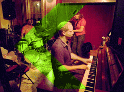

Anker-Taborn-Cleaver : DK/US
| 5. Mai 2010 | ||
| 20:30 |
//>>>> Rote Fabrik, Zürich >>| >>> Fr. 30.–/25.– Erm. Reservation. >> | >>>
>>>
>>>
>>> Lotte Anker, soprano-/alto-/tenorsax ; Craig Taborn, piano ; Gerald Cleaver, drums/ percussion >> DK/US >>
|>>> Der aus New York stammende Pianist Craig Taborn und
mehr »